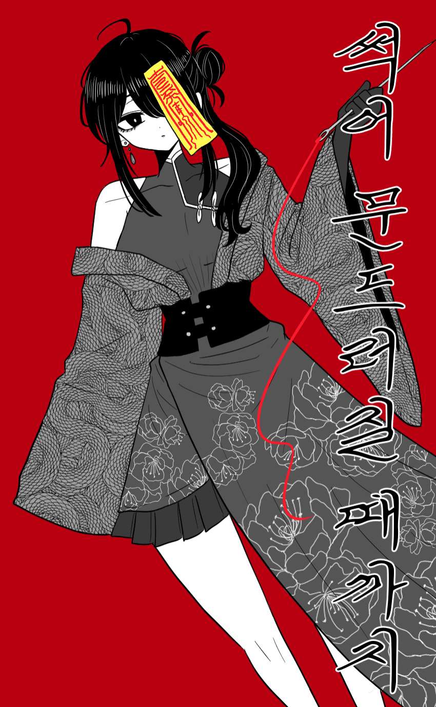
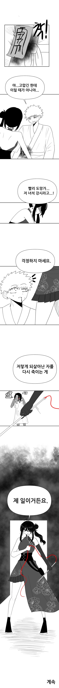

봐주셔서 감사합니다! https://comic.naver.com/challenge/list?titleId=857796 썩어 문드러질 때까지시체를 강시로 되살리는 금술, 사령술 때문에 혼란에 빠진 세상. 그런 혼돈 속에서 되살아난 자를 다시 죽이는 걸 전문으로 하는 한 술사가 있다.comic.naver.commail: jamong341@naver.com - dc official App출처: 카툰-연재 갤러리 [원본 보기]

댓글
수집 당시 댓글 39개
ㅇㅇ · 11.22 00:00:43
ㅇㅇ · 11.22 00:13:42
박수 · 11.22 00:18:01
ㅇㅇ · 11.22 00:21:51
카갤러1 · 11.22 00:37:29
카갤러2 · 11.22 02:05:06
ㅇㅇ · 11.22 05:46:56
ㅖㅖㅖ · 11.22 06:33:57
피타라텔레스 · 11.22 08:25:59
가면군 · 11.22 08:57:13
초강령 · 11.22 08:58:16
ㅇㅇ · 11.22 09:09:52
ㅇㅇ · 11.22 09:31:32
마라탕용 · 11.22 10:15:40
ㅇㅇ · 11.22 10:27:29
애니브리띵 · 11.22 10:41:04
하와 · 11.22 10:48:27
ㅇㅇ · 11.22 12:02:33
ㅇㅇ · 11.22 12:21:18
예령수아 · 11.22 15:32:27
카갤러3 · 11.22 20:31:10
봇치쟝 · 11.23 09:07:56
파벨안드루스카 · 11.23 09:10:52
· 파벨안드루스카 · 11.23 09:11:04
ㅇㅇ · 11.23 09:11:46
ㅇㅇ · 11.23 09:12:31
insomnium · 11.23 09:12:45
· insomnium · 11.23 09:13:21
· ㅇㅇ · 11.23 10:09:44
ㅇㅇ · 11.23 09:18:17
히이잉 · 11.23 09:27:10
원또 · 11.23 09:40:53
히이잉 · 11.23 10:56:01
ㅇㅇ · 11.23 11:07:24
ㅇㅇ · 11.23 13:05:37
ㅇㅇ · 11.23 13:31:02
혐한게이지실시간으로충전중 · 11.23 13:47:06
ㅇㅇ · 11.23 14:40:29
ㅇㅇ · 11.23 17:39:25